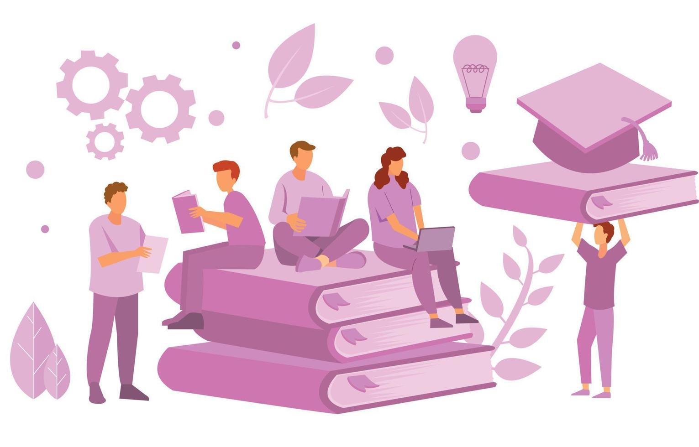
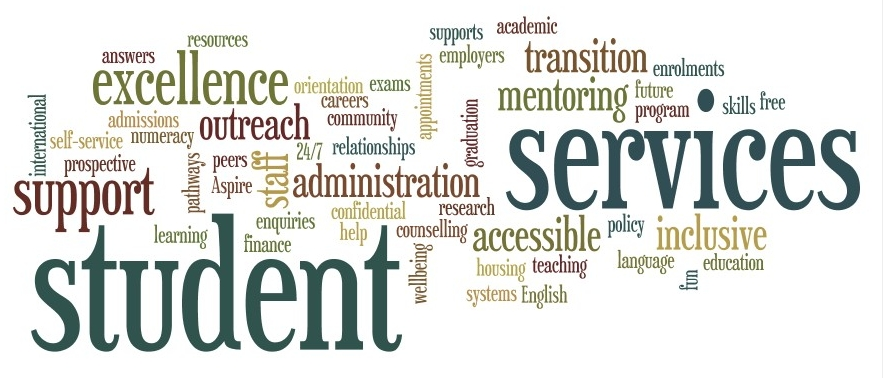

Introduction
 Welcome to Open Arms, a compassionate and dedicated initiative committed to providing unwavering support
to students in need. At Open Arms, we believe that every student deserves to thrive in a nurturing
environment, free from the overwhelming pressures that can lead to feelings of despair and hopelessness.
Our mission is to create a safe space where students can find solace, receive guidance, and gain access
to the vital resources they need to overcome life's challenges.
Our initiative was born out of a profound understanding of the unique struggles faced by students today.
Whether it's academic stress, social isolation, or personal hardships, we recognize that these
challenges can sometimes feel insurmountable. Open Arms is here to remind every student that they are
not alone. We are a community of caring individuals—counselors, educators, volunteers, and peers—who are
dedicated to listening, supporting, and uplifting one another.
Through a combination of educational programs, mental health resources, and community engagement, Open
Arms strives to empower students to seek help and build resilience. We offer confidential counseling
services, peer support networks, and workshops on stress management and emotional well-being. Our team
works tirelessly to raise awareness about mental health, reduce the stigma surrounding it, and promote a
culture of empathy and understanding.
Join us in our journey to create a brighter future for all students. Together, we can make a difference,
one open heart at a time.
Our Mission
At Open Arms, our mission is clear and resolute: to prevent student suicides and foster a culture of
support, empathy, and resilience within educational communities. We are dedicated to providing students
with the resources, guidance, and emotional support they need to navigate the challenges of academic
life and personal growth.
Core Objectives
1. Provide Immediate Support: Through confidential counseling services, peer support groups, and 24/7
helplines, we ensure that students have access to the help they need whenever they need it.
2. Raise Awareness: By conducting workshops, seminars, and campaigns, we aim to educate students,
educators, and parents about the importance of mental health and the signs of emotional distress.
3. Promote Emotional Well-being: We offer programs focused on stress management, mindfulness, and
resilience-building to equip students with the tools to handle life's pressures.
4. Foster Community Engagement: We create a supportive network of students, educators, and mental health
professionals who work together to create a safe and understanding environment.
Future impacts
As we look to the future, Open Arms is committed to creating long-lasting, positive impacts on the mental
health and well-being of students. Our vision includes:
1. Reduced Stigma: By normalizing conversations about mental health, we aim to eliminate the stigma
associated with seeking help and create a culture where students feel safe to express their emotions.
2. Enhanced Academic Performance: With a focus on emotional well-being, students will be better equipped
to
handle academic pressures, leading to improved performance and reduced dropout rates.
3. Stronger Communities: Our initiative fosters a sense of belonging and support, encouraging students
to
build strong, positive relationships with their peers and educators.
4. Empowered Individuals: By providing students with the tools and resources they need to navigate
life's
challenges, we empower them to become resilient, confident individuals who can overcome adversity and
thrive.
Our History
Open Arms was founded six months ago by a group of compassionate individuals who recognized the urgent
need for mental health support within the student community. Inspired by personal experiences and a
shared commitment to making a difference, our founders embarked on a journey to create a safe space
where students could find the help and understanding they needed during challenging times.
Milestones
Six Months Ago: Open Arms was officially established with the aim of preventing student suicides and
promoting mental health awareness. Our initial efforts focused on providing confidential counseling
services and building a network of trained volunteers.
Four Months Ago: We launched our first series of workshops on stress management, mindfulness, and
emotional resilience. These workshops were met with overwhelming support and attendance, highlighting
the community's need for such resources.
Two Months Ago: Open Arms expanded its reach by collaborating with local schools and universities. We
established peer support groups, offering students a platform to share their experiences and support one
another.
One Month Ago: Recognizing the importance of raising awareness, we organized our first mental health
awareness campaign. This campaign included seminars, social media outreach, and community events aimed
at reducing the stigma around mental health.
Upcoming Events
At Open Arms, we believe in the power of community and connection. We're excited to share our upcoming
events designed to support students and raise awareness about mental health. Here's a glimpse of what's
coming up:
1. Mental Health Awareness Workshop
Date: January 20, 2025
Time: 10:00 AM - 2:00 PM
Location: Central Community Hall, Jaipur
Description: An interactive workshop focused on mental health awareness and stress management
techniques. Open to students, educators, and parents.
2. Peer Support Group Meeting
Date: January 27, 2025
Time: 4:00 PM - 6:00 PM
Location: Vivekananda Global University, Jaipur
Description: A safe and confidential space for students to share their experiences and receive support
from their peers. Led by trained facilitators.
3. Fundraising Marathon
Date: February 10, 2025
Time: 7:00 AM - 12:00 PM
Location: City Park, Jaipur
Description: A marathon to raise awareness and funds for Open Arms' programs and services. Participants
of all fitness levels are welcome.
4.Educational Seminar: Understanding Suicide Prevention
Date: March 5, 2025
Time: 9:00 AM - 12:00 PM
Location: University Auditorium, Jaipur
Description: A seminar to educate students, educators, and parents about the signs of emotional
distress, effective intervention strategies, and the importance of seeking help.